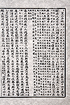
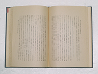
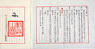

조선 초기 관찬서인 『세종실록』 「지리지」(1454년)는 울릉도와 독도가 강원도 울진현에 속한 두 섬이라고 기록하고 있습니다.
특히 “우산(독도) 무릉(울릉도)… 두 섬은 서로 멀리 떨어져 있지 않아 날씨가 맑으면 바라볼 수 있다”고 기록하고 있는데, 울릉도에서 날씨가 맑은 날 육안으로 보이는 섬은 독도가 유일합니다.
일본 막부는 울릉도 영유권에 대해 알아보기 위해 돗토리번에 울릉도의 소속을 질문(12월 24일)했습니다.
이에 대해 돗토리번이 막부에 다케시마(울릉도)와 마쓰시마(독도)가 돗토리번의 소속이 아니라고 답변(12월 25일)함에 따라 막부는 울릉도와 독도가 일본령이 아님을 공식적을 확인합니다.

1870년 외무성 관리인 사다 하쿠보(佐田白芽)등이 조선을 시찰한 후 외무성에 제출한 보고서입니다.
이 보고서에는 “다케시마(울릉도)와 마쓰시마(독도)가 조선 부속이 된 사정”이 언급되어 있어, 당시 일본 외무성이 두 섬을 조선 영토로 인식했다는 것을 알 수 있습니다.
1877년 3월 일본 최고행정기구인 태정관이 내무성에 울릉도와 독도가 일본령이 아니라고 내린 지령입니다.
태정관은 17세기 에도 막부와 조선정보간 교섭(울릉도쟁계) 결과 울릉도와 독도가 일본 소속이 아님이 확인되었다고 판단하고, “다케시마(울릉도)외 일도(一嶋, 독도)의 건에 대해 본방(本邦, 일본)은 관계가 없다는 것을 명심할 것”이라는 지시를 내무성에 내렸던 것입니다.

고종 황제는 칙령으로 ‘울릉도(鬱陵島)를 울도(鬱島)로 개칭(改稱)하고 도감(島監)을 군수(郡守)로 개정(改正)한 건(件)’을 제정 반포했습니다.
이 칙령 제2조에 울도군(鬱島郡)의 관할 구역으로 울릉전도(鬱陵全島), 죽도(竹島)와 함께 석도(石島, 독도)를 규정하여 독도가 울도군의 관할임을 명확히 했습니다.
울도군수 심흥택이 울릉도를 방문한 일본 시마네현 관민 조사단으로부터 일본이 독도을 영토 편입했다는 소식을 듣고, 다음날 강원도 관찰사와 내부(內部, 현재의 안전행정부에 해당)에 보고한 문서입니다.
이 보고서에는 “본국 소속 독도”라고 하여 독도가 울도군의 관할임을 분명히 했습니다.
5월. 의정부 참정대신 지령 제3호
대한제국 최고의 행정기구인 의정부에서 일본의 독도 영토 편입을 부인하는 지령을 내린 것입니다.
의정부는 강원도 관찰사로부터 일본이 독도를 영토 편입했다는 보고를 접하고, 일본의 독도 편입을 부인하는 참정대신(지금의 부총리격)의 지령을 내립니다.
샌프란시스코 강화조약은 제2차 세계대전을 종결하면서 연합국과 일본이 체결한 조약입니다.
이 조약 제2조(a)에서 “일본은 한국의 독립을 인정하고, 제주도, 거문도 및 울릉도를 포함한 한국에 대한 모든 권리, 권원 및 청구권을 포기한다”고 규정했습니다.
이는 한국의 3천여 개의 도서 가운데 예시에 불과하며, 독도가 직접적으로 명시되지 않았다고 하여 독도가 한국의 영토에 포함되지 않는다고 볼 수 없습니다.